| 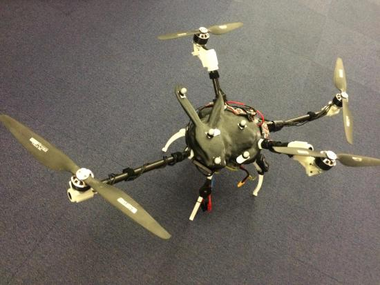 |
Computational multicopter design (SIGGRAPH Asia 2016)
We present an interactive system for computational design, optimization, and fabrication of multicopters. Our computational approach allows non-experts to design, explore, and evaluate a wide range of different multicopters. We provide users with an intuitive interface for assembling a multicopter from a collection of components (e.g., propellers, motors, and carbon fiber rods). [...]
DOI
Paper
Video
Page
|
| 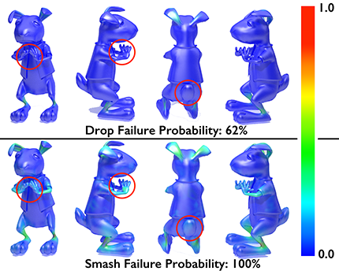 |
Stochastic structural analysis for context-aware design and fabrication (SIGGRAPH Asia 2016)
In this paper we propose failure probabilities as a semantically and mechanically meaningful measure of object fragility. We present a stochastic finite element method which exploits fast rigid body simulation and reduced-space approaches to compute spatially varying failure probabilities. We use an explicit rigid body simulation to emulate the real-world loading conditions an object might experience, including persistent and transient frictional contact, while allowing us to combine several such scenarios together. [...]
DOI
Paper
Video
Page
|
| 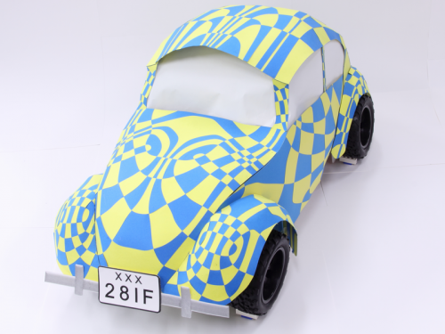 |
Fabrication of freeform objects by principal strips (SIGGRAPH Asia 2016)
Our novel method uses orthogonal principal strips to fabricate objects whose boundary consists of freeform surfaces. This approach not only lends an artistic touch to the appearance of objects, but also provides directions for reinforcement, as the surface is mostly bent along the lines of curvature. Moreover, it is unnecessary to adjust the bending of these orthogonal strips during the construction process, which automatically reforms the design shape as if it is memorized, provided the strips possess bending rigidity. [...]
DOI
Paper
Video
|
| 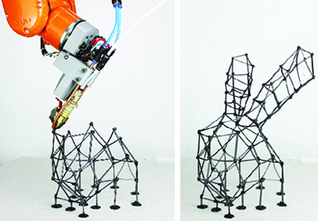 |
FrameFab: robotic fabrication of frame shapes (SIGGRAPH Asia 2016)
In this paper, we present a novel algorithm to generate a feasible fabrication sequence for general frame shapes. To solve this non-trivial combinatorial problem, we develop a divide-and-conquer strategy that first decomposes the input frame shape into stable layers via a constrained sparse optimization model. Then we search a feasible sequence for each layer via a local optimization method together with a backtracking strategy. [...]
DOI
Paper
Page
|
| 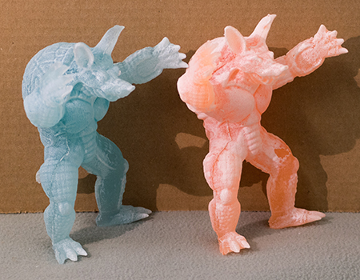 |
FlexMolds: automatic design of flexible shells for molding (SIGGRAPH Asia 2016)
We present FlexMolds, a novel computational approach to automatically design flexible, reusable molds that, once 3D printed, allow us to physically fabricate, by means of liquid casting, multiple copies of complex shapes with rich surface details and complex topology. The approach to design such flexible molds is based on a greedy bottom-up search of possible cuts over an object, evaluating for each possible cut the feasibility of the resulting mold. [...]
DOI
Paper
Video
Page
|
| 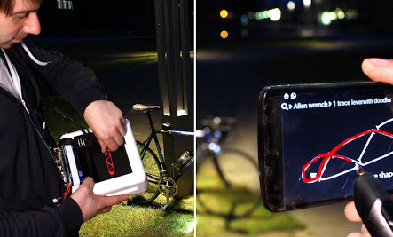 | Mobile Fabrication (UIST 2016)
We present an exploration into the future of fabrication, in particular the vision of mobile fabrication, which we define as "personal fabrication on the go".
From our experience with the prototypes we derive hardware requirements to make mobile fabrication also technically feasible. [...]
DOI Paper Video Page |
| 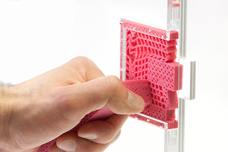 | Metamaterial Mechanisms (UIST 2016)
In order to allow users to create metamaterial mechanisms efficiently we implemented a specialized 3D editor. It allows users to place different types of cells, including the shear cell, thereby allowing users to add mechanical functionality to their objects. To help users verify their designs during editing, our editor allows users to apply forces and simulates how the object deforms in response. [...]
DOI Paper Video Page |
| 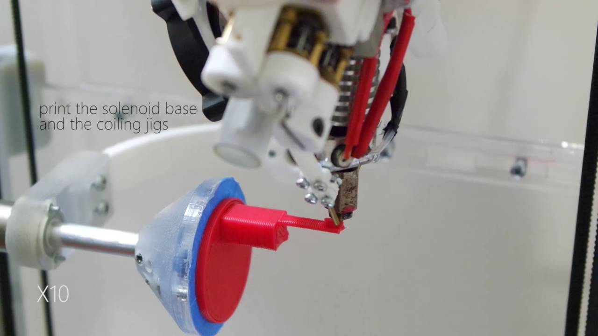 | A 3D Printer for Interactive Electromagnetic Devices (UIST 2016)
We introduce a new form of low-cost 3D printer to print interactive electromechanical objects with wound in place coils.
At the heart of this printer is a mechanism for depositing wire within a five degree of freedom (5DOF)
fused deposition modeling (FDM) 3D printer. Copper wire can be used with this mechanism to form coils which
induce magnetic fields as a current is passed through them. [...]
DOI Paper Video Page |
| 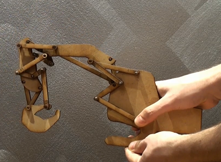 | ChaCra: an interactive design system for rapid character crafting (SCA 2016)
We propose an interactive design system for rapid crafting of planar mechanical characters.
Our method combines the simplicity of sketch-based modeling with the ease of defining motion
through extreme poses. In order to translate digital designs into fabrication-ready
descriptions, our method automatically
computes the mechanical structure that makes the characters move as desired. [...]
DOI Paper Video Page |
| 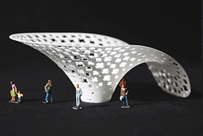 | Stenciling: Designing Structurally-Sound Surfaces with Decorative Patterns (SGP 2016)
We present a novel method to design shells with artistic cutouts in a manner that produces
a stable final result. The process of stenciling, removing material with a fixed shape,
is a particularly appealing way to introduce a decorative pattern
into the design of architectural structures, furniture, or household objects. [...]
DOI
Paper
Video
Page |
| 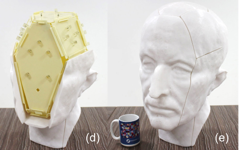 | CofiFab: coarse-to-fine fabrication of large 3D objects (SIGGRAPH 2016)
This paper presents CofiFab, a coarse-to-fine 3D fabrication solution, combining 3D printing and 2D laser cutting for cost-effective fabrication of large objects at lower cost and higher speed. Our key approach is to first build coarse internal base structures within the given 3D object using laser cutting, and then attach thin 3D-printed parts, as an external shell, onto the base to recover the fine surface details.
DOI Paper Video Page |
| 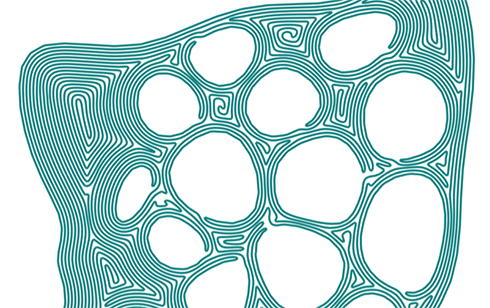 | Connected fermat spirals for layered fabrication (SIGGRAPH 2016).
We develop a new kind of "space-filling" curves, connected Fermat spirals, and show their compelling properties as a tool path fill pattern for layered fabrication. Unlike classical space-filling curves such as the Peano or Hilbert curves, which constantly wind and bind to preserve locality, connected Fermat spirals are formed mostly by long, low-curvature paths. This geometric property, along with continuity, influences the quality and efficiency of layered fabrication.
DOI Paper Video Page |
| 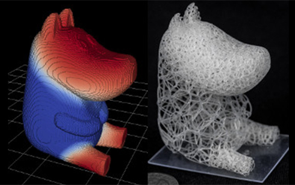 | Procedural voronoi foams for additive manufacturing (SIGGRAPH 2016)
In this paper we propose to study procedural, aperiodic microstructures inspired by Voronoi open-cell foams. The absence of regularity affords for a simple approach to grade the foam geometry --- and thus its mechanical properties --- within a target object and its surface. Rather than requiring a global optimization process, the microstructures are directly generated to exhibit a specified elastic behavior. [...]
DOI
Page
Slides |
| 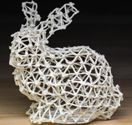 | Printing arbitrary meshes with a 5DOF wireframe printer (SIGGRAPH 2016)
We formalize the collision avoidance problem using a directed graph, and propose an algorithm that finds a locally minimal set of constraints on the order of edges that guarantees there will be no collisions. Then a second algorithm orders the edges so that the printing progresses smoothly. Though meshes do exist that still cannot be printed, our method prints a wide range of models that previous methods cannot, and it provides a fundamental enabling algorithm for future development of wireframe printing. [...]
DOI Paper Video Page |
| 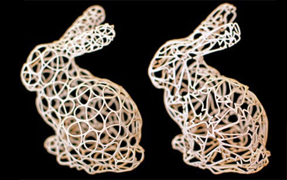 | Designing structurally-sound ornamental curve networks (SIGGRAPH 2016)
We present a computational tool for designing ornamental curve networks---structurally-sound physical surfaces with user-controlled aesthetics. In contrast to approaches that leverage texture synthesis for creating decorative surface patterns, our method relies on user-defined spline curves as central design primitives. [...]
DOI Paper Video Page |
| 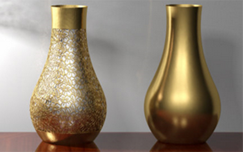 | Synthesis of filigrees for digital fabrication (SIGGRAPH 2016)
Filigrees are thin patterns found in jewelry, ornaments and lace fabrics. They are often formed of repeated base elements manually composed into larger, delicate patterns. Digital fabrication simplifies the process of turning a virtual model of a filigree into a physical object. However, designing a virtual model of a filigree remains a time consuming and challenging task. The difficulty lies in tightly packing together the base elements while covering a target surface. [...]
DOI Paper Video Page |
| 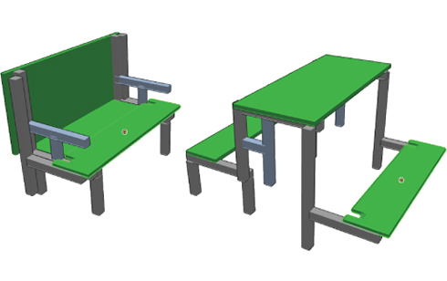 | Computational design of reconfigurables (SIGGRAPH 2016)
A reconfigurable is an object or collection of objects whose transformation between various states defines its functionality or aesthetic appeal. For example, consider a mechanical assembly composed of interlocking pieces, a transforming folding bicycle, or a space-saving arrangement of apartment furniture. [...]
DOI Paper Video Page |
| 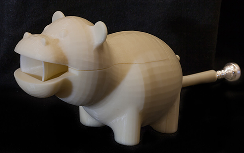 | Acoustic voxels: computational optimization of modular acoustic filters (SIGGRAPH 2016)
A reconfigurable is an object or collection of objects whose transformation between various states defines its functionality or aesthetic appeal. For example, consider a mechanical assembly composed of interlocking pieces, a transforming folding bicycle, or a space-saving arrangement of apartment furniture. [...]
DOI Paper Video Page |
| 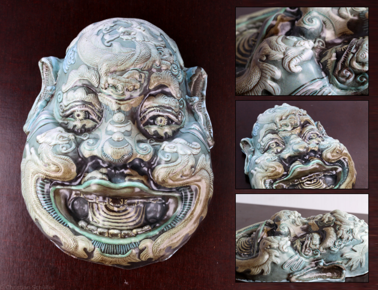 | Computational thermoforming (SIGGRAPH 2016)
e propose a method to fabricate textured 3D models using thermoforming. Differently from industrial techniques, which target mass production of a specific shape, we propose a combined hardware and software solution to manufacture customized, unique objects. Our method simulates the forming process and converts the texture of a given digital 3D model into a pre-distorted image that we transfer onto a plastic sheet. During thermoforming, the sheet deforms to create a faithful physical replica of the digital model. [...]
DOI Paper Video Page |
| 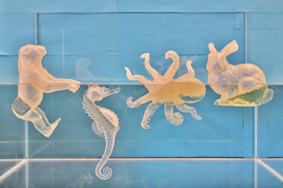 | Buoyancy Optimization for Computational Fabrication (EUROGRAPHICS 2016)
This paper introduces a design and fabrication pipeline for creating floating forms. Our method optimizes for buoyant equilibrium and stability of complex 3D shapes, applying a voxel-carving technique to control the mass distribution.
The resulting objects achieve a desired floating pose defined by a user-specified waterline height and orientation. [...]
DOI Paper Video Page |
| 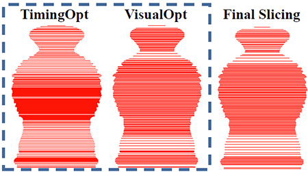 | Saliency-Preserving Slicing Optimization for Effective 3D Printing (EUROGRAPHICS 2016)
We present an adaptive slicing scheme for reducing the manufacturing time for 3D printing systems.
Based on a new saliency-based metric, our method optimizes the thicknesses of slicing layers to
save printing time and preserve the visual quality of the printing results. We formulate the problem as a
constrained optimization and compute the slicing result via a two-step optimization scheme. [...]
DOI Paper Video Page |
| 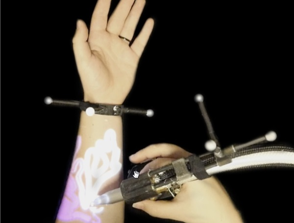 |
ExoSkin: On-Body Fabrication (CHI 2016)
We present ExoSkin, a hybrid fabrication system for designing and printing digital artifacts directly on the body. ExoSkin utilizes a custom built fabrication machine designed specifically for on-body printing. ExoSkin utilizes a custom built fabrication machine designed specifically for on-body printing. We demonstrate the potential of on-body fabrication with a set of sample workflows, and share feedback from initial observation sessions. [...]
DOI
Paper
Video
Page
|
| 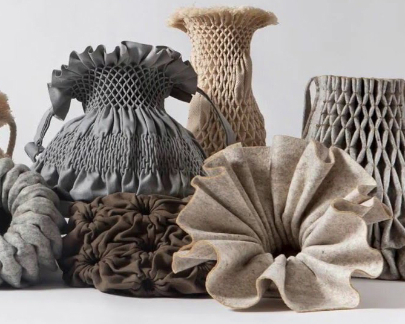 |
The Hybrid Bricolage: Bridging Parametric Design with Craft through Algorithmic Modularity (CHI 2016)
Our hypothesis is that the arrangement of parametric design in modular representation, in the form of a catalog, can assist makers unfamiliar with this practice. We evaluate this assumption in the realm of bag design, through a Honeycomb Smocking Pattern Catalog and custom Computer-Aided Smocking (CAS) design software. [...]
DOI
Paper
Video
|
| 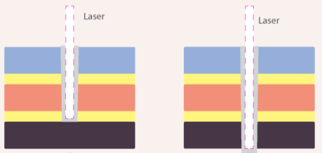 |
Foldem: Heterogeneous Object Fabrication via Selective Ablation of Multi-Material Sheets (CHI 2016)
oldem, a novel method of rapid fabrication of objects with multi-material properties is presented. Our specially formulated Foldem sheet allows users to fabricate and easily assemble objects with rigid, bendable, and flexible properties using a standard laser-cutter. [...]
DOI
Paper
Video
|
| 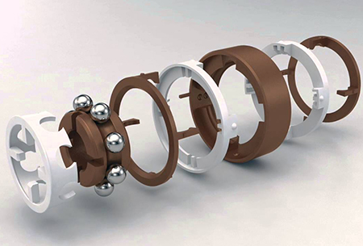 |
Steel-Sense: Integrating Machine Elements with Sensors by Additive Manufacturing (CHI 2016)
We present Steel-Sense, an approach to joining these two families of elements to create a new type of HCI design primitive. We leverage recent developments in 3D printing to embed sensing in metal structures that are otherwise difficult to equip with sensors, and present four design principles, implementing. [...]
DOI
Paper
Video
|
| 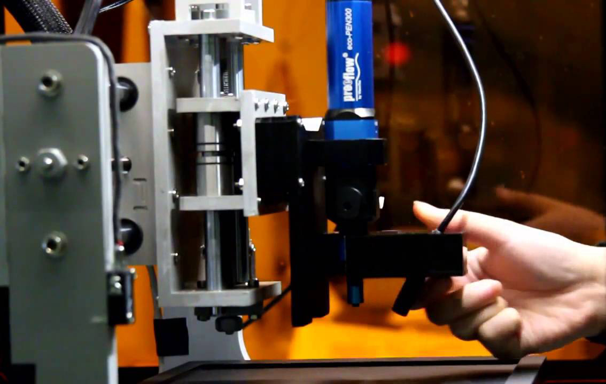 |
xPrint: A Modularized Liquid Printer for Smart Materials Deposition (CHI 2016)
To meet the increasing requirements of HCI researchers who are looking into using liquid-based materials (e.g., hydrogels) to create novel interfaces, we present a design strategy for HCI researchers to build and customize a liquid-based smart material printing platform with off-the-shelf or easy-to-machine parts. For the hardware, we suggest a magnetic assembly-based modular design. [...]
DOI
Paper
Video
Page
|
|
ChronoFab: Fabricating Motion (CHI 2016)
We present ChronoFab, a 3D modeling tool to craft motion sculptures, tangible representations of 3D animated models, visualizing an object's motion with static, transient, ephemeral visuals that are left behind. Our tool casts 3D modeling as a dynamic art-form by employing 3D animation and dynamic simulation for the modeling of motion sculptures. [...]
DOI
Paper
Video
Page
|
| 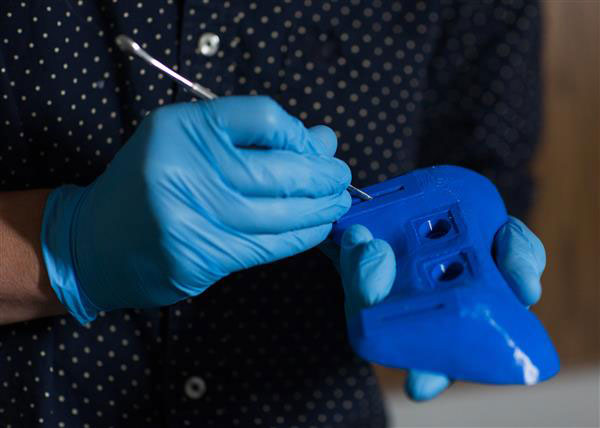 |
What you Sculpt is What you Get: Modeling Physical Interactive Devices with Clay and 3D Printed Widgets (CHI 2016)
We present a method for fabricating prototypes of interactive computing devices from clay sculptures without requiring the designer to be skilled in CAD software. The method creates a "what you sculpt is what you get" process that mimics the "what you see is what you get" processes used in interface design for 2D screens. [...]
DOI
Video
|
| 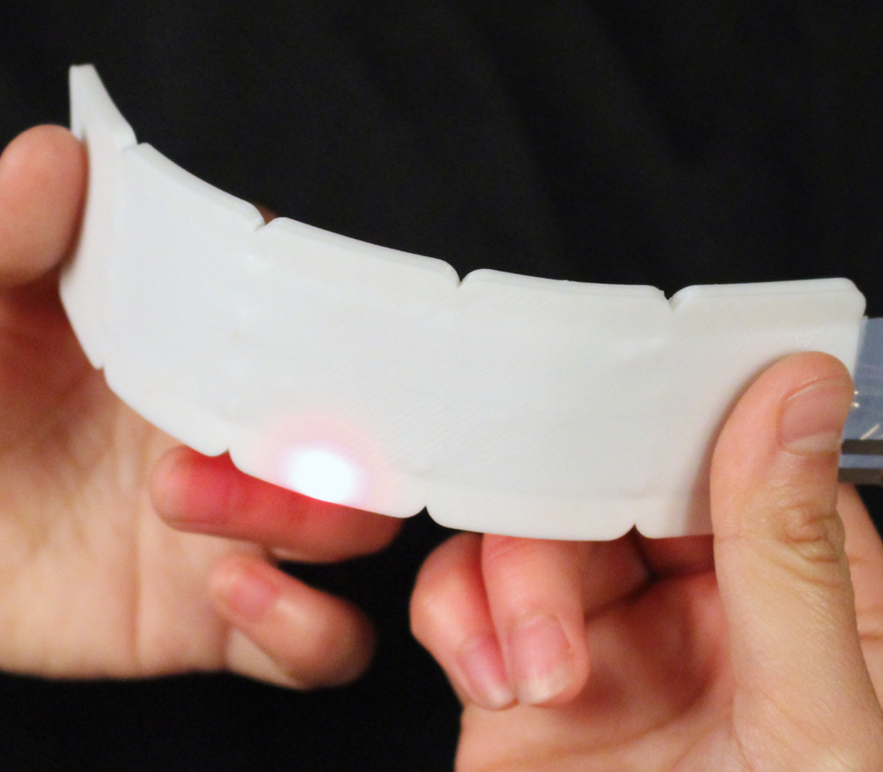 |
HotFlex: Post-print Customization of 3D Prints Using Embedded State Change (CHI 2016)
We propose HotFlex: a new approach allowing precisely located parts of a 3D object to transition on demand from a solid into a deformable state and back. This approach enables intuitive hands-on remodeling, personalization, and customization of a 3D object after it is printed. We introduce the approach and present an implementation based on computer-controlled printed heating elements that are embedded within the 3D object. [...]
DOI
Paper
Video
Page
|
| 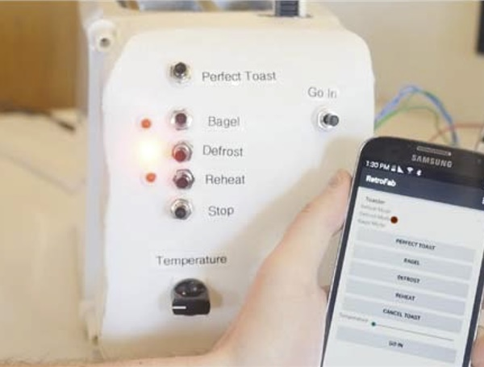 |
RetroFab: A Design Tool for Retrofitting Physical Interfaces using Actuators, Sensors and 3D Printing (CHI 2016)
We present RetroFab, an end-to-end design and fabrication environment that allows non-experts to retrofit physical interfaces. Our approach allows for changing the layout and behavior of physical interfaces. Unlike customizing software interfaces, physical interfaces are often challenging to adapt because of their rigidity. With RetroFab, a new physical interface is designed that serves as a proxy interface for the legacy controls that are now operated using actuators. [...]
DOI
Paper
Video
Page
|
| 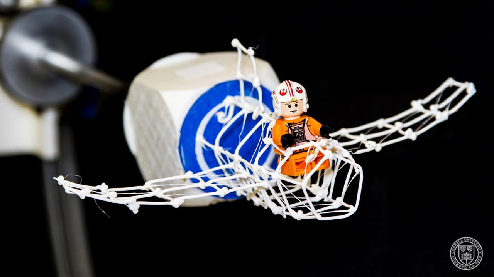 | On-The-Fly Print: Incremental Printing While Modelling (CHI 2016)
In this paper we propose On-the-Fly Print: a 3D modeling approach that allows the user to design
3D models digitally while having a low-fidelity physical wireframe model printed in parallel.
Our software starts printing features as soon as they are created and updates the physical model as needed. [...]
DOI Paper Video Page |
| 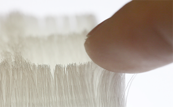 | Cilllia: 3D Printed Micro-Pillar Structures for Surface Texture, Actuation and Sensing (CHI 2016)
This work presents a method for 3D printing hair-like structures on both flat and curved surfaces.
It allows a user to design and fabricate hair geometries that are smaller than 100 micron.
We built a software platform to let users quickly define the hair angle, thickness, density, and height. [...]
DOI Paper Video Page |
| 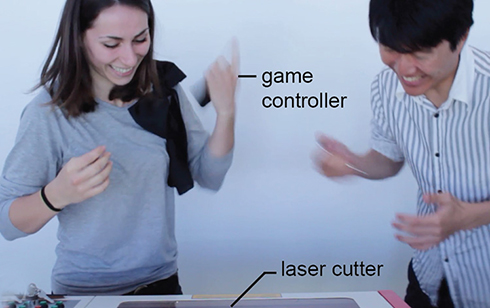 | Destructive Games: Creating Value by Destroying Valuable Physical Objects (CHI 2016)
We present a series of games that result in valuable physical objects being destroyed objects owned by the players. Interestingly, we found that we can design these games to be desirable to play, despite the loss of the object, by instead producing social value. [...]
DOI Paper Video Page |
 |
Understanding Newcomers to 3D Printing: Motivations, Workflows, and Barriers of Casual Makers (CHI 2016)
We present a study of casual makers, users who have no prior experience with fabrication and mainly explore walk-up-and-use 3D printing services at public print centers, such as libraries, universities, and schools. We carried out 32 interviews with casual makers, print center operators, and fabrication experts to understand the motivations, workflows, and barriers in appropriating 3D printing technologies. [...]
DOI Paper Video Page |
| 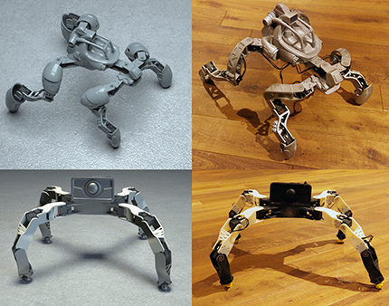 | Interactive design of 3D-printable robotic creatures (SIGGRAPH ASIA 2015)
We present an interactive design system that allows casual users to quickly create 3D-printable robotic creatures. Our approach automates the tedious parts of the design process while providing ample room for customization of morphology, proportions, gait and motion style. The technical core of our framework is an efficient optimization-based solution that generates stable motions for legged robots of arbitrary designs. [...]
DOI Paper Video Page |
| 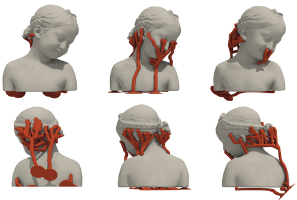 | Perceptual models of preference in 3D printing direction (SIGGRAPH ASIA 2015)
This paper introduces a perceptual model for determining 3D printing orientations. Additive manufacturing methods involving low-cost 3D printers often require robust branching support structures to prevent material collapse at overhangs. Although the designed shape can successfully be made by adding supports, residual material remains at the contact points after the supports have been removed, resulting in unsightly surface artifacts. Moreover, fine surface details on the fabricated model can easily be damaged while removing supports. [...]
DOI Paper Video Page |
| 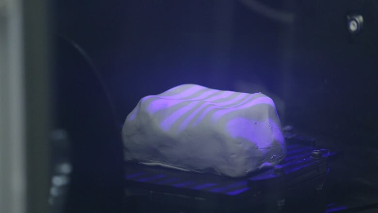 | ReForm: Integrating Physical and Digital Design through Bidirectional Fabrication (UIST 2015)
To provide a more flexible design process that allows objects to iteratively evolve through
both digital and physical input, we introduce bidirectional fabrication. To demonstrate the concept,
we built ReForm, a system that integrates digital modeling with shape input, shape output,
annotation for machine commands, and visual output. [...]
DOI Video Page |
| 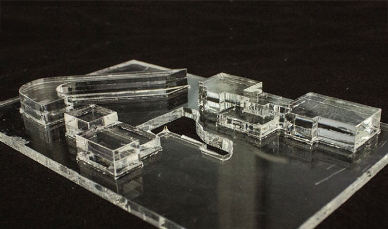 | LaserStacker: Fabricating 3D Objects by Laser Cutting and Welding (UIST 2015)
We propose eliminating the assembly step with our system LaserStacker.
The key idea is to use the laser cutter to not only cut but also to weld.
Users place not one acrylic sheet, but a stack of acrylic sheets into their cutter. [...]
DOI Paper Video Page |
| 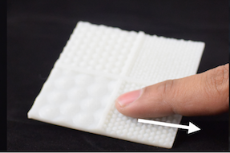 | HapticPrint: Designing Feel Aesthetics for Digital Fabrication (UIST 2015)
We present HapticPrint as a pair of design tools to easily modify the feel of a 3D model.
Our external tool maps textures and UI elements onto arbitrary shapes,
and our internal tool modifies the internal geometry of models for novel compliance and weight characteristics.
We demonstrate the value of HapticPrint with a range of applications that expand the aesthetics of feel, usability, and interactivity in 3D artifacts.
[...]
DOI Paper Video Page |
| 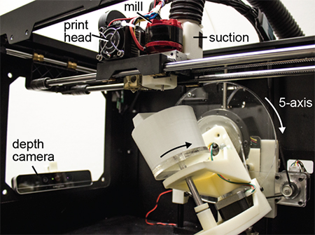 | Patching Physical Objects (UIST 2015)
In this paper, we propose a different approach: instead of re-printing the entire object from scratch, we suggest patching the existing object to reflect the next design iteration.
Since only a fraction of the entire object is refabricated, our approach reduces material consumption and plastic waste (for our example objects by 82% and 93% respectively). [...]
DOI Paper Video Page |
| 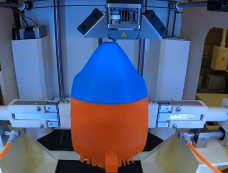 | RevoMaker: Enabling Multi-directional and Functionally-embedded 3D printing using a Rotational Cuboidal Platform (UIST 2015)
We present "RevoMaker", a self-contained 3D printer that creates direct out-of-the-printer functional prototypes, using less build material and with substantially less reliance on support structures. By modifying a standard low-cost FDM printer with a revolving cuboidal platform and printing partitioned geometries around cuboidal facets, we achieve a multidirectional additive prototyping process to reduce the print and support material use. [...]
DOI Paper Video Page |
| 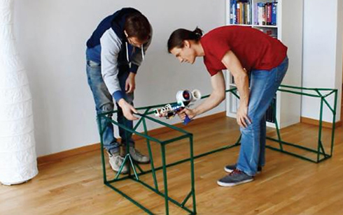 | Protopiper: Physically Sketching Room-Sized Objects at Actual Scale (UIST 2015)
Protopiper is a mechanical device that allows users to sketch room-sized objects at actual scale. The key idea behind protopiper is that it forms adhesive tape into tubes as its main building material, rather than extruded plastic or photopolymer lines. Since the resulting tubes are hollow they offer excellent strength-to-weight ratio, thus scale well to large structures. [...]
DOI Paper Video Page |
| 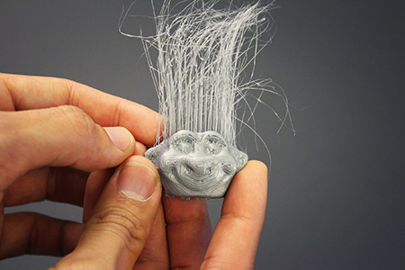 | 3D Printed Hair: Fused Deposition Modeling of Soft Strands, Fibers and Bristles (UIST 2015)
We introduce a technique for furbricating 3D printed hair, fibers and bristles, by exploiting the stringing phenomena inherent in 3D printers using fused deposition modeling. Our approach offers a range of design parameters for controlling the properties of single strands and also of hair bundles. [...]
DOI Paper Video Page |
| 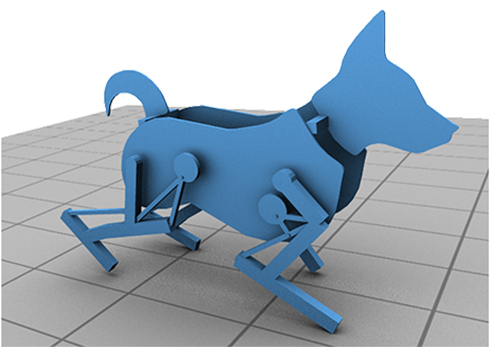 | Computational design of walking automata (SCA 2015)
Creating mechanical automata that can walk in stable and pleasing manners is a challenging task that requires both skill and expertise. We propose to use computational design to offset the technical difficulties of this process. A simple drag-and-drop interface allows casual users to create personalized walking toys from a library of pre-defined template mechanisms. [...]
DOI Paper Video Page |
| 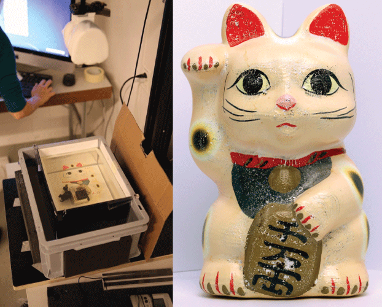 | Texture Mapping Real-World Objects with Hydrographics (SGP 2015)
In this paper, we develop a method to enable texture mapping of physical objects,
that is, we allow one to map an arbitrary color image onto a three-dimensional object.
Our approach builds upon hydrographics,
a technique to transfer pigments printed on a sheet of polymer onto curved surfaces. [...]
DOI Paper Video Page |
| 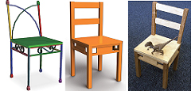 | Reforming Shapes for Material-aware Fabrication (SGP 2015)
In this work, we propose a novel data-driven reforming i.e., reshaping algorithm
that adapts an input multi-component model for a target fabrication material.
The algorithm adapts both the part geometry and the inter-part topology of the input
shape to better align with material-aware fabrication requirements. [...]
DOI Paper Video Page |
 |
MultiFab: a machine vision assisted platform for multi-material 3D printing (SIGGRAPH 2015)
We have developed a multi-material 3D printing platform that is high-resolution, low-cost, and extensible.
The key part of our platform is an integrated machine vision system. This
system allows for self-calibration of printheads, 3D scanning, and a closed-feedback loop to enable print corrections. [...]
DOI Paper Video Page |
 |
Fab Forms: Customizable Objects For Fabrication With Validity And Geometry Caching (SIGGRAPH 2015)
We define Fab Form as any design representation that lends itself to interactive customization by a novice user,
while remaining valid and manufacturable.
We propose a method to achieve these Fab Form requirements for general parametric designs
tagged with a general set of automated validity tests and a small number of parameters exposed to the casual user.
Our solution separates Fab Form evaluation into a precomputation stage and a runtime stage. [...]
DOI Paper Video Page |
| 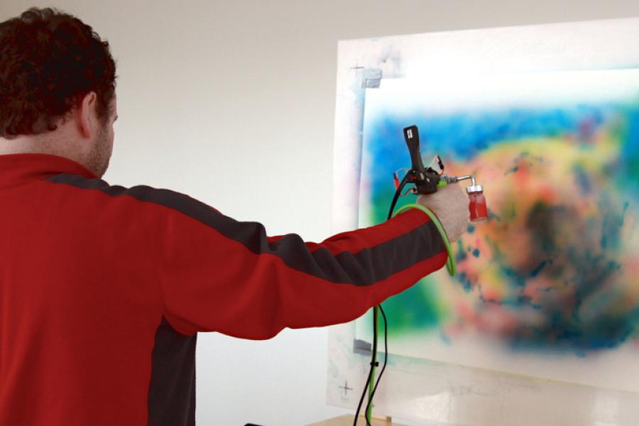 | Augmented Airbrush for Computer Aided Painting (CAP) (SIGGRAPH 2015)
We present an augmented airbrush that allows novices to experience the art of spray painting.
Inspired by the thriving field of smart tools, our handheld device uses 6DOF tracking, augmentation of
the airbrush trigger,
and a specialized algorithm to restrict the application of paint to a preselected reference image. [...]
DOI Paper Video Page |
| 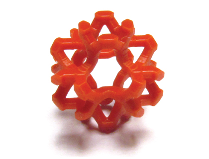 | Elastic textures for additive fabrication (SIGGRAPH 2015)
We introduce elastic textures: a set of parametric, tileable, printable, cubic patterns achieving a broad range
of isotropic elastic material properties: the softest pattern is over a thousand times softer than the stiffest,
and the Poisson's ratios range from below zero to nearly 0.5. Using a combinatorial search over topologies followed
by shape optimization,
we explore a wide space of truss-like, symmetric 3D patterns to obtain a small family. [...]
DOI Paper Video Page |
| 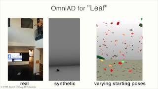 | OmniAD: data-driven omni-directional aerodynamics (SIGGRAPH 2015)
This paper introduces "OmniAD," a novel data-driven pipeline to model and acquire the aerodynamics of
three-dimensional rigid objects. Traditionally, aerodynamics are examined through elaborate wind tunnel
experiments or expensive fluid dynamics computations, and are only measured for a small number of discrete wind
directions. [...]
DOI Paper Video Page |
| 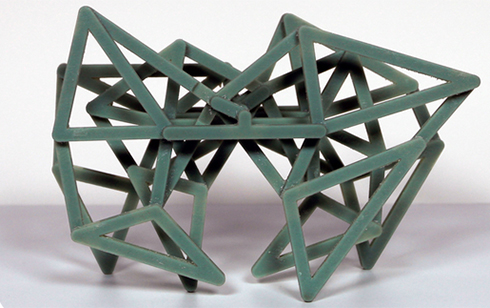 | LinkEdit: interactive linkage editing using symbolic kinematics (SIGGRAPH 2015)
Articulated deformable characters are widespread in computer animation. Unfortunately, we lack methods for their automatic fabrication using modern additive manufacturing (AM) technologies. We propose a method that takes a skinned mesh as input, then estimates a fabricatable single-material model that approximates the 3D kinematics of the corresponding virtual articulated character in a piecewise linear manner. [...]
DOI Paper Video Page |
 |
Computational design of metallophone contact sounds (SIGGRAPH 2015)
Metallophones such as glockenspiels produce sounds in response to contact. Building these instruments is a complicated process, limiting their shapes to well-understood designs such as bars. We automatically optimize the shape of arbitrary 2D and 3D objects through deformation and perforation to produce sounds when struck which match user-supplied frequency and amplitude spectra. [...]
DOI Paper Video Page |
| 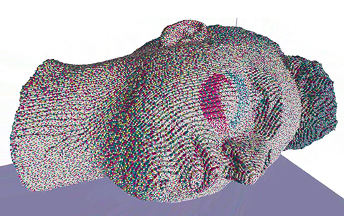 | Pushing the Limits of 3D Color Printing: Error Diffusion with Translucent Materials (SIGGRAPH 2015)
In this article, we propose an error diffusion halftoning approach to achieve full color with multi-jet printers, which operates on multiple isosurfaces or layers within the object. We propose a novel traversal algorithm for voxel surfaces, which allows the transfer of existing error diffusion algorithms from 2D printing. The resulting prints faithfully reproduce colors, color gradients and fine-scale details. [...]
DOI Paper Video |
Microstructures to control elasticity in 3D printing (SIGGRAPH 2015)
We propose a method for fabricating deformable objects with spatially varying elasticity using 3D printing. Using a single, relatively stiff printer material, our method designs an assembly of small-scale microstructures that have the effect of a softer material at the object scale, with properties depending on the microstructure used in each part of the object. We build on work in the area of metamaterials, using numerical optimization to design tiled microstructures with desired properties, but with the key difference that our method designs families of related structures that can be interpolated to smoothly vary the material properties over a wide range. [...]
DOI Paper Video Page |
Dapper: decompose-and-pack for 3D printing (SIGGRAPH 2015)
We present Dapper, a global optimization algorithm for the DAP problem which can be applied to both powder- and FDM-based 3D printing. The solution search is top-down and iterative. Starting with a coarse decomposition of the input shape into few initial parts, we progressively pack a pile in the printing volume, by iteratively docking parts, possibly while introducing cuts, onto the pile. [...]
DOI Paper Video |
MetaMorphe: Designing Expressive 3D Models for Digital Fabrication (C&C 2015)
We introduce MetaMorphe, a novel digital fabrication framework that uses a common web-programming metaphor
to enable users to easily transform static 3D models into re-formed, re-made, and re-imagined customized personal
artifacts. We demonstrate the compatibility of MetaMorphe with three well-established design interfaces,
direction manipulation, scripted-CAD, and generative design. [...]
DOI Paper Video Page |
3D Printing Pneumatic Device Controls with Variable Activation Force Capabilities (CHI 2015)
We explore 3D printing physical controls whose tactile response can be manipulated programmatically through pneumatic actuation.
We introduce and discuss a series of example 3D printed pneumatic controls, which demonstrate the feasibility of our approach. This includes conventional controls,
such as buttons, knobs and sliders, but also extends to domains such as toys and deformable interfaces. [...]
DOI Paper Video Page |
Lamello: Passive Acoustic Sensing for Tangible Input Components (CHI 2015)
We describe Lamello, an approach for creating tangible input components that recognize user interaction
via passive acoustic sensing.
Lamello employs comb-like structures with varying-length tines at interaction points (e.g., along slider paths).
Our main contributions are in the co-design of the tine structures, information encoding schemes, and audio analysis. [...]
DOI Paper Video Page |
Platener: Low-Fidelity Fabrication of 3D Objects by Substituting 3D Print with Laser-Cut Plates (CHI 2015)
This paper presents Platener, a system that allows quickly fabricating intermediate design iterations of 3D models, a process also known as low-fidelity fabrication. Platener achieves its speed-up by extracting straight and curved plates from the 3D model and substituting them with laser cut parts of the same size and thickness. Only the regions that are of relevance to the current design iteration are executed as full-detail 3D prints. [...]
DOI Paper Video Page |
D-Coil: A Hands-on Approach to Digital 3D Models Design (CHI 2015)
We introduce D-Coil, a new digital 3D modeling approach using wax coiling to bring tangibility to
the design of digital models. After defining a shape to extrude,
the users follow the lead of a hand-held actuated extruder to instantiate the actual extrusion using wax. [...]
DOI Paper Video |
Low-Fidelity Fabrication: Speeding up Design Iteration of 3D Objects (CHI 2015)
ow-fidelity fabrication systems speed up rapid prototyping by printing intermediate versions of a prototype as fast, low-fidelity previews. Only the final version is fabricated as a full high-fidelity 3D print.
This allows designers to iterate more quickly-achieving a better design in less time. [...]
DOI Paper Video Page |
A Layered Fabric 3D Printer for Soft Interactive Objects (CHI 2015)
We present a new type of 3D printer that can form precise,
but soft and deformable 3D objects from layers of off-the-shelf fabric. Our printer employs an approach where
a sheet of fabric forms each layer of a 3D object. The printer cuts this sheet along the 2D contour of the layer
using a laser cutter and then bonds
it to previously printed layers using a heat sensitive adhesive. [...]
DOI Paper Video Page |
Scotty: Relocating Physical Objects Across Distances
Using Destructive Scanning, Encryption, and 3D Printing (TEI 2015) We present a simple self-contained appliance that allows relocating inanimate physical objects across distance. Each unit consists of an off-the-shelf 3D printer that we have extended with a 3-axis milling machine, a camera, and a micro-controller for encryption/decryption and transmission. Users see the object appear layer-by-layer on the receiver side as it disappears layer-by-layer at the sender side. [...]
DOI Paper Video Page |
SPATA: Spatio-Tangible Tools for Fabrication-Aware Design (TEI 2015)
SPATA is the digital adaptation of two spatial measurement tools, that explores their closer integration into virtual design environments. We adapt two of the traditional measurement tools: calipers and protractors. Both tools can measure, transfer, and present size and angle. Their close integration into different design environments makes tasks more fluid and convenient. [...]
DOI Paper Video |
Creating works-like prototypes of mechanical objects (SIGGRAPH ASIA 2014)
Designers often create physical works-like prototypes early in the product development cycle to explore possible mechanical architectures for a design. Yet, creating functional prototypes requires time and expertise, which discourages rapid design iterations. Designers must carefully specify part and joint parameters to ensure that parts move and fit and together in the intended manner. We present an interactive system that streamlines the process by allowing users to annotate rough 3D models with high-level functional relationships (e.g., part A fits inside part B). [...]
DOI Paper Video Page |
A series of tubes: adding interactivity to 3D prints using internal pipes (UIST 2014)
We investigate how 3D models can be modified to facilitate the creation of interactive objects that offer dynamic input and output. We introduce a general technique for supporting
the rapid prototyping of interactivity by removing interior material from 3D models to form internal pipes.
We describe this new design space of pipes for interaction design, where variables include openings, path constraints, topologies, and inserted media.
[...]
DOI Paper Video Page |
FlatFitFab: interactive modeling with planar sections (UIST 2014)
We present a comprehensive system to author planar section structures, common in art and engineering.
A study on how planar section assemblies are imagined and drawn guide our design principles:
planar sections are best drawn in-situ, with little foreshortening,
orthogonal to intersecting planar sections, exhibiting regularities between planes and contours. [...]
DOI Paper Video Page |
WirePrint: 3D printed previews for fast prototyping (UIST 2014)
With WirePrint, we propose to instead print low-fidelity wireframe previews in the early stages of the design process.
Wireframe previews are 3D prints in which surfaces have been replaced with a wireframe mesh.
Since wireframe previews are to scale and represent the overall shape of the 3D object,
they allow users to quickly verify key aspects of their 3D design, such as the ergonomic fit. [...]
DOI Paper Video Page |
Pteromys: interactive design and optimization of free-formed free-flight model airplanes (SIGGRAPH 2014)
This paper introduces novel interactive techniques for designing original hand-launched free-flight glider airplanes which can actually fly.
We present a compact and efficient representation of glider aerodynamics that can be fit to real-world conditions using a data-driven method. [...]
DOI Paper Video Page |
Computational design of linkage-based characters (SIGGRAPH 2014)
We present a design system for linkage-based characters, combining form and function in an aesthetically-pleasing
manner. Linkage-based character design exhibits a mix of discrete and continuous problems,
making for a highly unintuitive design space that is difficult to navigate without assistance. [...]
DOI Paper Video Page |
High-contrast computational caustic design (SIGGRAPH 2014)
We present a new algorithm for computational caustic design.
Our algorithm solves for the shape of a transparent object such that the refracted light paints a desired caustic image on a receiver screen. We introduce an optimal
transport formulation to establish a correspondence between the input geometry and the unknown target shape. [...]
DOI Paper Video Page |
Computational Light Routing: 3D Printed Optical Fibers for Sensing and Display (SIGGRAPH 2014)
We introduce automatic fiber design algorithms together with new manufacturing techniques
to route light between two arbitrary surfaces. Our implicit algorithm optimizes light transmission
by minimizing fiber curvature and maximizing
fiber separation while respecting constraints such as fiber arrival angle. [...]
DOI Paper Page |
Spin-It: Optimizing Moment of Inertia for Spinnable Objects (SIGGRAPH 2014)
Spinning tops and yo-yos have long fascinated cultures around the world with their unexpected, graceful motions that seemingly elude gravity. We present an algorithm to generate designs for spinning objects by optimizing rotational dynamics properties. As input, the user provides a solid 3D model and a desired axis of rotation. Our approach then modifies the mass distribution such that the principal directions of the moment of inertia align with the target rotation frame. [...]
DOI Paper Video Page |
Branching support structures for 3D printing (SIGGRAPH 2014)
Most 3D printing processes can be modeled by an incremental stacking of thin, flexible layers. In this case, it is apparent that for complex shapes, some stacks will be "floating" in mid-air unless they are supported from below by additional material. Similarly if a slice is much larger than the one below it, it will droop unless supported. These areas are called overhangs [Evans 2012], and most 3D printing software provides automated generation of some kind of support structure. However, the support is waste, of both time and material, and this waste should be minimized. [...]
DOI Paper Page |
Design and fabrication by example (SIGGRAPH 2014)
We propose a data-driven method for designing 3D models that can be fabricated. First, our approach converts a collection of expert-created designs to a dataset of parameterized design templates that includes all information necessary for fabrication. The templates are then used in an interactive design system to create new fabri-cable models in a design-by-example manner. A simple interface allows novice users to choose template parts from the database, change their parameters, and combine them to create new models. [...]
DOI Paper Video Page |
Build-to-last: strength to weight 3D printed objects (SIGGRAPH 2014)
We introduce a hollowing optimization algorithm based on the concept of honeycomb-cells structure. Honeycombs structures are known to be of minimal material cost while providing strength in tension. We utilize the Voronoi diagram to compute irregular honeycomb-like volume tessellations which define the inner structure. We formulate our problem as a strength--to--weight optimization and cast it as mutually finding an optimal interior tessellation and its maximal hollowing subject to relieve the interior stress. [...]
DOI Paper Video Page |
Bridging the gap: automated steady scaffoldings for 3D printing (SIGGRAPH 2014)
We propose to exploit the ability of FFF printers to print bridges across gaps. Since bridges are always supported by pillars at their extremities, they are both stronger and more stable than hierarchical tree structures. The result is an automated support generation technique using little material while ensuring fine surface quality and stability during the printing process. [...]
DOI Paper Page |
Dual-color mixing for fused deposition modeling printers (EUROGRAPHICS 2014)
In this work we detail a method that leverages the two color heads of recent low-end fused deposition modeling FDM 3D printers to produce continuous tone imagery.
The key insight behind our work is that by applying small geometric offsets, tone can be varied without the need to switch color print heads within a single layer.
[...]
DOI Paper Page |
Clever Support: Efficient Support Structure Generation for Digital Fabrication (EUROGRAPHICS 2014)
We present a novel, geometry-based approach that minimizes the support material while providing sufficient support.
Using our approach, the input 3D model is first oriented into a position with minimal area that requires support.
Then the points in this area that require support are detected. [...]
DOI Paper |
The Hybrid Artisans: A Case Study in Smart Tools (ToCHI 2014)
We present an approach to combining digital fabrication and craft, demonstrating a
hybrid interaction paradigm where human and machine work in synergy.
The FreeD is a hand-held digital milling device, monitored
by a computer while preserving the makers freedom to manipulate the work in many creative ways. [...]
DOI Video Page |
MixFab: a mixed-reality environment for personal fabrication (CHI 2014)
In this paper, we introduce MixFab, a mixed-reality environment for personal fabrication
that lowers the barrier for users to engage in personal fabrication. Users design objects in an
immersive augmented reality environment, interact with virtual objects
in a direct gestural manner and can introduce existing physical objects effortlessly into their designs. [...]
DOI Paper Video Page |
faBrickation: fast 3D printing of functional objects by integrating construction kit building blocks (CHI 2014)
We present a new approach to rapid prototyping of functional objects, such as the body of a head-mounted display.
The key idea is to save 3D printing time by automatically substituting sub-volumes with standard building blocks'in our case Lego bricks.
When making the body for a head-mounted display, for example, getting the optical path right is paramount. [...]
DOI Paper Video Page |
Printing Teddy Bears: A Technique for 3D Printing of Soft Interactive Objects (CHI 2014)
This paper considers the design, construction, and example use of a new type of 3D printer which fabricates three-dimensional objects from soft fibers (wool and wool blend yarn). he resulting objects recreate the geometric forms specified in the solid models which specify them, but are soft and flexible -- somewhat reminiscent in character to hand knitted materials. [...]
DOI Paper Video Page |
3D-Printing Spatially Varying BRDFs (CG&A 2013)
A new method fabricates custom surface reflectance and spatially varying bidirectional reflectance
distribution functions (svBRDFs). Researchers optimize a microgeometry for a
range of normal distribution functions and simulate the resulting surface's effective reflectance. [...]
DOI Paper Page |
Cost-effective printing of 3D objects with skin-frame structures (SIGGRAPH ASIA 2013)
In this paper, we present an automatic solution to design a skin-frame structure
for the purpose of reducing the material cost in printing a given 3D object.
The frame structure is designed by an optimization scheme which significantly reduces material
volume and is guaranteed to be physically stable,
geometrically approximate, and printable. [...]
DOI Paper Video Page |
Cross-sectional structural analysis for 3D printing optimization (SIGGRAPH ASIA 2013)
We propose a novel cross-sectional structural analysis technique that efficiently detects critical stress
inside a 3D object. We slice the object into cross-sections and compute stress based on bending momentum
equilibrium. Unlike traditional approaches based on finite element methods,
our method doesn’t require a volumetric mesh or solution of linear systems, enabling interactive analysis speed. [...]
DOI Paper Video Page |
Designing and fabricating mechanical automata from mocap sequences (SIGGRAPH ASIA 2013)
We propose an automatic algorithm that takes a motion sequence of a humanoid character and generates the design for a mechanical figure that approximates the input motion when driven with a single input crank. Our approach has two stages. The motion approximation stage computes a motion that approximates the input sequence as closely as possible while remaining compatible with the geometric and motion constraints of the mechanical parts in our design. [...]
DOI Paper Video Page |
Cost-effective printing of 3D objects with skin-frame structures (SIGGRAPH ASIA 2013)
3D printers have become popular in recent years and enable fabrication of custom objects for home users. However, the cost of the material used in printing remains high. In this paper, we present an automatic solution to design a skin-frame structure for the purpose of reducing the material cost in printing a given 3D object. The frame structure is designed by an optimization scheme which significantly reduces material volume and is guaranteed to be physically stable, geometrically approximate, and printable. Furthermore, the number of struts is minimized by solving an l0 sparsity optimization. [...]
DOI Paper Page |
Human-computer interaction for hybrid carving (UIST 2013)
In this paper we explore human-computer interaction for carving, building upon our previous work with
the FreeD digital sculpting device. We contribute a new tool design (FreeD V2), with a novel set of
interaction techniques for the fabrication of static models:
personalized tool paths, manual overriding, and physical merging of virtual models. [...]
DOI Paper Video Page |
Sauron: embedded single-camera sensing of printed physical user interfaces (UIST 2013)
We present Sauron, an embedded machine vision-based system for sensing human input on physical controls like buttons, sliders, and joysticks.
With Sauron, designers attach a single camera with integrated ring light to a printed prototype. [...]
DOI Paper Video Page |
PacCAM: material capture and interactive 2D packing for efficient material usage on CNC cutting machines (UIST 2013)
In this paper, we introduce PacCAM, a system for packing 2D parts within a given source material
for fabrication using 2D cutting machines. Our solution combines computer vision to
capture the source material shape with a user interface that incorporates 2D rigid body simulation and snapping. [...]
DOI Paper Video Page |
OpenFab: a programmable pipeline for multi-material fabrication (SIGGRAPH 2013)
We present OpenFab, a programmable pipeline for synthesis of multi-material 3D printed objects that is
inspired by RenderMan and modern GPU pipelines. The pipeline supports procedural evaluation of
geometric detail and material composition, using shader-like fablets, allowing models to be specified
easily and efficiently. [...]
DOI Paper Page |
Computational Design of Mechanical Characters (SIGGRAPH 2013)
We present an interactive design system that allows non-expert users to create animated mechanical characters. Given an articulated character as input, the user iteratively creates an animation by sketching motion curves indicating how different parts of the character should move. For each motion curve, our framework creates an optimized mechanism that reproduces it as closely as possible. [...]
DOI Paper Video Page |
Spec2Fab: a reducer-tuner model for translating specifications to 3D prints (SIGGRAPH 2013)
In this paper, we propose an abstraction mechanism that simplifies the design, development, implementation, and reuse of these algorithms. Our solution relies on two new data structures: a reducer tree that efficiently parameterizes the space of material assignments and a tuner network that describes the optimization process used to compute material arrangement. [...]
DOI Paper Video Page |
Computational design of actuated deformable characters (SIGGRAPH 2013)
We present a method for fabrication-oriented design of actuated deformable characters that allows a user to automatically create physical replicas of digitally designed characters using rapid manufacturing technologies. Given a deformable character and a set of target poses as input, our method computes a small set of actuators along with their locations on the surface and optimizes the internal material distribution such that the resulting character exhibits the desired deformation behavior. [...]
DOI Paper Video Page |
Make it stand: balancing shapes for 3D fabrication (SIGGRAPH 2013)
We propose to assist users in producing novel, properly balanced designs by interactively deforming an existing model. We formulate balance optimization as an energy minimization, improving stability by modifying the volume of the object, while preserving its surface details. This takes place during interactive editing: the user cooperates with our optimizer towards the end result. [...]
DOI Paper Video Page |
Worst-case structural analysis (SIGGRAPH 2013)
We present a method that would identify structural problems in objects designed for 3D printing based on geometry and material properties only, without specific assumptions on loads and manual load setup. We solve a constrained optimization problem to determine the "worst" load distribution for a shape that will cause high local stress or large deformations. While in its general form this optimization has a prohibitively high computational cost, we demonstrate that an approximate method makes it possible to solve the problem rapidly for a broad range of printed models. [...]
DOI Paper Page |
Enchanted scissors: a scissor interface for support in cutting and interactive fabrication (SIGGRAPH 2013)
We present an approach to support basic and complex cutting processes through an interactive fabrication experience [Willis et al. 2011]. Our system, enchanted scissors, is a digitally controlled pair of scissors (Figure 1). It restricts areas that can be cut while requiring the user's exertion of force and decision to execute each cut. Therefore, unlike a completely digitalized cutting device, the user can freely apply improvisations within the permitted areas in real-time.[...]
DOI |
InfraStructs: fabricating information inside physical objects for imaging in the terahertz region (SIGGRAPH 2013)
We introduce InfraStructs, material-based tags that embed information inside digitally fabricated objects for imaging in the Terahertz region. Terahertz imaging can safely penetrate many common materials, opening up new possibilities for encoding hidden information as part of the fabrication process. We outline the design, fabrication, imaging, and data processing steps to fabricate information inside physical objects. [...]
DOI Paper Video Page |
 |
Fabrication-aware Design with Intersecting Planar Pieces (EUROGRAPHICS 2013)
We propose a computational design approach to generate 3D models composed of interlocking planar pieces.
We show how intricate 3D forms can be created by sliding the pieces into each other along straight slits,
leading to a simple construction that does not require glue, screws, or other means of support. [...]
DOI Paper Video Page |
Computing and Fabricating Multiplanar Models (EUROGRAPHICS 2013)
Our shape approximation algorithm iteratively assigns mesh faces to planar segments and slowly deforms these faces towards corresponding segments. This approach ensures that the output for a given closed mesh is still a closed mesh and avoids introducing self-intersections. [...]
[EUROGRAPHICS DL] Paper Video Page |
Computational Fabrication and Display of Material Appearance (EUROGRAPHICS 2013)
In this report, we summarize research efforts from the worlds of fabrication display, and categorize the different approaches into a common taxonomy. We believe that this report can serve as a basis for systematic exploration of the design space in future research. [...]
[EUROGRAPHICS DL] Paper Page |
Orthogonal slicing for additive manufacturing (C&G 2013)
Our approach then finds a compromise between modeling each part of the shape individually in
the best possible direction and using one direction for the whole shape part.
In particular, we compute an orthogonal
basis and consider only the three basis vectors as slice normals (i.e. fabrication directions). [...]
DOI Paper Page |
FreeD: a freehand digital sculpting tool (CHI 2013)
In this paper, we present an approach to combining digital fabrication and craft,
emphasizing the user experience. While many researchers strive to enable makers to
design and produce 3D objects, our research seeks to present a new fabrication
approach to make unique, one-of-a-kind artifacts.
To that end, we developed the FreeD, a hand-held digital milling device. [...]
DOI Paper Video Page |
LaserOrigami: laser-cutting 3D objects (CHI 2013)
We present LaserOrigami, a rapid prototyping system that produces 3D objects using a laser cutter. LaserOrigami is substantially faster than traditional 3D fabrication techniques such as 3D printing and unlike traditional laser cutting the resulting 3D objects require no manual assembly. [...]
DOI Paper Video Page |
Enclosed: a component-centric interface for designing prototype enclosures (TEI 2013)
This paper explores the problem of designing enclosures (or physical cases) that are needed for prototyping electronic devices.
We present a novel interface that uses electronic components as handles for designing the 3D shape of the enclosure. [...]
DOI Paper |
Stress relief: improving structural strength of 3D printable objects (SIGGRAPH 2012)
We developed a system that addresses the printability issues by providing automatic detection and correction of the problematic cases.
Our system detects potential problematic cases by considering gravity and gripping forces by evaluating most possible places on the object where it can be held. [...]
DOI Paper Video Page |
Fabricating articulated characters from skinned meshes (SIGGRAPH 2012)
Articulated deformable characters are widespread in computer animation. Unfortunately, we lack methods for their automatic fabrication using modern additive manufacturing (AM) technologies. We propose a method that takes a skinned mesh as input, then estimates a fabricatable single-material model that approximates the 3D kinematics of the corresponding virtual articulated character in a piecewise linear manner. [...]
DOI Paper Video Page |
Physical Face Cloning (SIGGRAPH 2012)
We propose a complete process for designing, simulating, and fabricating synthetic skin for an animatronics character that mimics the face of a given subject and its expressions. The process starts with measuring the elastic properties of a material used to manufacture synthetic soft tissue. Given these measurements we use physics-based simulation to predict the behavior of a face when it is driven by the underlying robotic actuation. [...]
DOI Paper Video Page |
Position-correcting tools for 2D digital fabrication. (SIGGRAPH 2012)
We propose a new approach to precise positioning of a tool that combines manual and automatic positioning: in our approach, the user coarsely positions a frame containing the tool in an approximation of the desired path, while the device tracks the frame's location and adjusts the position of the tool within the frame to correct the user's positioning error in real time. [...]
DOI Paper Video Page |
3D-printing of non-assembly, articulated models (SIGGRAPH ASIA 2012)
In this paper, we propose a method for converting 3D models into printable, functional, non-assembly models with internal friction. To this end, we have designed an intuitive work-flow that takes an appropriately rigged 3D model, automatically fits novel 3D-printable and posable joints, and provides an interface for specifying rotational constraints. We show a number of results for different articulated models, demonstrating the effectiveness of our method. [...]
DOI Paper Page |
Chopper: partitioning models into 3D-printable parts (SIGGRAPH ASIA 2012)
3D printing technology is rapidly maturing and becoming ubiquitous. One of the remaining obstacles to wide-scale adoption is that the object to be printed must fit into the working volume of the 3D printer. We propose a framework, called Chopper, to decompose a large 3D object into smaller parts so that each part fits into the printing volume. These parts can then be assembled to form the original object. [...]
DOI Paper Page |
Motion-guided mechanical toy modeling (SIGGRAPH ASIA 2012)
We introduce a new method to synthesize mechanical toys solely from the motion of their features. The designer specifies the geometry and a time-varying rotation and translation of each rigid feature component. Our algorithm automatically generates a mechanism assembly located in a box below the feature base that produces the specified motion. Parts in the assembly are selected from a parameterized set including belt-pulleys, gears, crank-sliders, quick-returns, and various cams (snail, ellipse, and double-ellipse). [...]
DOI Paper Video |
Interactive Construction: Interactive Fabrication of Functional Mechanical Devices (UIST 2012)
constructable is an interactive drafting table that produces precise physical output in every step. Users interact by drafting directly on the workpiece using a hand-held laser pointer. The system tracks the pointer, beautifies its path, and implements its effect by cutting the workpiece using a fast high-powered laser cutter. [...]
DOI Paper Video Page |
Midas: fabricating custom capacitive touch sensors to prototype interactive objects (UIST 2012)
An increasing number of consumer products include user interfaces that rely on touch input. While digital fabrication techniques such as 3D printing make it easier to prototype the shape of custom devices, adding interactivity to such prototypes remains a challenge for many designers. We introduce Midas, a software and hardware toolkit to support the design, fabrication, and programming of flexible capacitive touch sensors for interactive objects. [...]
DOI Paper Video |
Printed optics: 3D printing of embedded optical elements for interactive devices (UIST 2012)
An increasing number of consumer products include user interfaces that rely on touch input. While digital fabrication techniques such as 3D printing make it easier to prototype the shape of custom devices, adding interactivity to such prototypes remains a challenge for many designers. We introduce Midas, a software and hardware toolkit to support the design, fabrication, and programming of flexible capacitive touch sensors for interactive objects. [...]
DOI Paper Video Page |
DressUp: a 3D interface for clothing design with a physical mannequin (TEI 2012)
This paper introduces DressUp, a computerized system for designing dresses with
3D input using the form of the human body as a guide. It consists of a body-sized physical mannequin,
a screen, and tangible prop tools for drawing in 3D on and around the mannequin. As the user draws,
he/she modifies or creates pieces of digital cloth,
which are displayed on a model of the mannequin on the screen. [...]
DOI Paper Video Page |
Slices: a shape-proxy based on planar sections (SIGGRAPH AISA 2011)
We explore the use of planar sections, i.e., the contours of intersection of planes with a 3D object, for creating shape abstractions, motivated by their popularity in art and engineering. We first perform a user study to show that humans do define consistent and similar planar section proxies for common objects. Interestingly, we observe a strong correlation between user-defined planes and geometric features of objects. [...]
DOI Paper Page |
Converting 3D furniture models to fabricatable parts and connectors (SIGGRAPH 2011)
Although there is an abundance of 3D models available, most of them exist only in virtual simulation and are not immediately usable as physical objects in the real world. We solve the problem of taking as input a 3D model of a man-made object, and automatically generating the parts and connectors needed to build the corresponding physical object. We focus on furniture models, and we define formal grammars for IKEA cabinets and tables. We perform lexical analysis to identify the primitive parts of the 3D model. [...]
DOI Paper Video Page |
Interactive fabrication: new interfaces for digital fabrication (TEI 2011)
We present a series of prototype devices that use real-time input to fabricate physical form: Interactive Fabrication. Our work maps out the problem space of real-time control for digital fabrication devices, and examines where alternative interfaces for digital fabrication are relevant. We conclude by reflecting upon the potential of interactive fabrication and outline a number of considerations for future research in this area. [...]
DOI Paper Video Page |
SketchChair: an all-in-one chair design system for end users (TEI 2011)
SketchChair is an application that allows novice users to control the entire process of designing and building their own chairs. Chairs are designed using a simple 2D sketch-based interface and design validation tools, and are then fabricated from sheet materials, cut by a laser cutter or CNC milling machine. [...]
DOI Paper Video Page |
CopyCAD: remixing physical objects with copy and paste from the real world (UIST 2010)
This paper introduces a novel technique for integrating geometry from physical objects into computer aided design (CAD) software. We allow users to copy arbitrary real world object geometry into 2D CAD designs at scale through the use of a camera/projector system. [...]
DOI Paper |
Design and Fabrication of Materials with Desired Deformation Behavior (SIGGRAPH 2010)
This paper introduces a data-driven process for designing and fabricating materials with desired deformation behavior. Our process starts with measuring deformation properties of base materials. For each base material we acquire a set of example deformations, and we represent the material as a non-linear stress-strain relationship in a finite-element model. [...]
DOI Paper Video Page |
Fabricating spatially-varying subsurface scattering (SIGGRAPH 2010)
In this paper, we present a complete solution for fabricating a material volume with a desired surface BSSRDF. We stack layers from a fixed set of manufacturing materials whose thickness is varied spatially to reproduce the heterogeneity of the input BSSRDF. [...]
DOI Paper Video Page |
Physical Reproduction of Materials with Specified Subsurface Scattering (SIGRAPH 2010)
We describe a mathematical model that predicts the profiles of different stackings of base materials, at arbitrary thicknesses. In an inverse process, we can then specify a desired reflection profile and compute a layered composite material that best approximates it. Our algorithm efficiently searches the space of possible combinations of base materials, pruning unsatisfactory states imposed by physical constraints. We validate our process by producing both homogeneous and heterogeneous composites fabricated using a multi-material 3D printer. [...]
DOI Paper Page |
Designing Custommade Metallophone with Concurrent Eigenanalysis (NIME 2010)
We introduce an interactive interface for the custom design of metallophones.
The shape of each plate must be determined
in the design process so that the metallophone will produce the proper tone when struck with a mallet.
Our system addresses this problem by running a concurrent numerical eigenanalysis during interactive geometry editing. [...]
Paper Video Page |
 |
Spatial sketch: bridging between movement & fabrication (TEI 2010)
This paper explores the rationale and details behind the development of the Spatial Sketch application,
and presents our observations from user testing and a hands-on lamp shade design workshop.
Finally we reflect upon the relevance of
embodied forms of human computer interaction for use in digital fabrication. [...]
DOI Paper Video Page |
Fabricating microgeometry for custom surface reflectance (SIGGRAPH 2009)
We propose a system for manufacturing physical surfaces that, in aggregate, exhibit a desired surface appearance.
Our system begins with a user specification of a BRDF, or simply a highlight shape,
and infers the required distribution of surface slopes.
We demonstrate a variety of surfaces, ranging from reproductions of measured BRDFs to materials with unconventional highlights.
[...]
DOI Paper Page |
 |
Interactive Cover Design Considering Physical Constraints (EUROGRAPHICS 2009)
We developed an interactive system to design a customized cover for a given three-dimensional (3D)
object such as a camera, teapot, or car. The system first computes the convex hull of the input geometry.
The user segments it into several cloth patches by drawing on the 3D surface. [...]
DOI Paper Video Page |
The ModelCraft framework: Capturing freehand annotations and edits to facilitate the 3D model design process using a digital pen (ToCHI 2009)
ModelCraft supports a wide range of operations on complex models,
from editing a model to assembling multiple models, and offers physical tools to
capture free-space input. Several interviews and a formal study with the potential
users of our system proved the ModelCraft system useful. Our system is inexpensive,
requires no tracking infrastructure or per object calibration,
and we show how it could be extended seamlessly to use current 3D printing technology. [...]
DOI Paper |
Plushie: an interactive design system for plush toys (SIGGRAPH 2007)
We introduce Plushie, an interactive system that allows nonprofessional users to design their own original plush toys. To design a plush toy, one needs to construct an appropriate two-dimensional (2D) pattern.
However, it is difficult for non-professional users to appropriately design a 2D pattern. [...]
DOI Paper Video Page |
A compact factored representation of heterogeneous subsurface scattering (SIGGRAPH 2006)
In this paper, we address the problem of acquiring and compactly representing the spatial component of heterogeneous subsurface scattering functions. We propose a material model based on matrix factorization that can be mapped onto arbitrary geometry, and, due to its compact form, can be incorporated into most visualization systems with little overhead. We present results of several real-world datasets that are acquired using a projector and a digital camera. [...]
DOI Paper Page |
Making papercraft toys from meshes using strip-based approximate unfolding (SIGGRAPH 2004)
We propose a new method for producing unfolded papercraft patterns of rounded toy animal figures from triangulated meshes by means of strip-based approximation. Although in principle a triangulated model can be unfolded simply by retaining as much as possible of its connectivity while checking for intersecting triangles in the unfolded plane, creating a pattern with tens of thousands of triangles is unrealistic. Our approach is to approximate the mesh model by a set of continuous triangle strips with no internal vertices. Initially, we subdivide our mesh into parts corresponding to the features of the model. [...]
DOI Paper Slides |